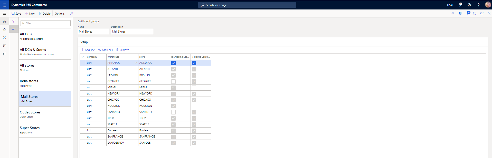
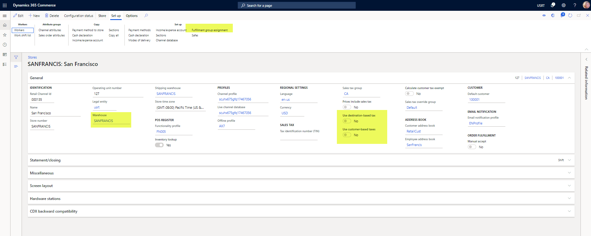
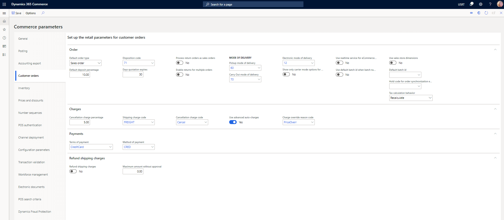

Kundenaufträge in Point of Sale (POS)
Important
Dynamics 365 Retail ist jetzt Dynamics 365 Commerce und bietet umfassende Handelsfunktionen für alle Kanäle – von E-Commerce über Shops bis hin zu Callcentern. Weitere Informationen zu diesen Änderungen finden Sie unter Microsoft Dynamics 365 Commerce.
Dieses Thema enthält Informationen zur Erstellung und Verwaltung von Kundenaufträgen in Point of Sale (POS). Kundenaufträge können verwendet werden, um dort Verkäufe zu erfassen, wo Käufer Produkte zu einem späteren Zeitpunkt oder von einem anderen Standort abholen oder Artikel gesendet bekommen möchten.
In einer Omni-Channel-Commerce-Welt stellen viele Einzelhändler von Debitorenaufträgen als Option oder Sonderaufträge, um die verschiedenen Produkt- und Erfüllungsbedingungen zu erfüllen. Nachfolgend sind einige typische Szenarios:
- Ein Debitor fordert, dass Produkte für eine bestimmten Adresse an einem bestimmten Datum geliefert werden.
- Ein Debitor möchte Produkte von einem Shop oder einem Lagerplatz aufheben, der aus Filiale oder vom Lagerplatz abweicht, an dem der Debitor die Produkte gekauft hat.
- Ein Kunde in einem Laden möchte Produkte heute bestellen und zu einem späteren Zeitpunkt im gleichen Laden abholen.
Einzelhändler können auch Debitorenaufträge verwenden, um verlorenen Verkäufe zu minimieren, den vordefinierten Ausfälle möglicherweise nicht anzeigen, da die Waren zu unterschiedlichen Zeiten oder an einem Ort geliefert oder verarbeitet werden kann.
Debitorenbestellungen einrichten
Bevor Sie versuchen, die Kundenbestellfunktion in POS zu verwenden, stellen Sie sicher, dass Sie alle erforderlichen Konfigurationen in der Commerce-Zentrale abgeschlossen haben.
Konfigurieren von Lieferarten
Um Kundenbestellungen verwenden zu können, müssen Sie die Lieferarten konfigurieren, die der Ladenkanal verwenden kann. Sie müssen mindestens eine Lieferart definieren, die verwendet werden kann, wenn Bestellpositionen aus einem Laden an einen Kunden versendet werden. Sie müssen zudem mindestens eine Abholart definieren, die verwendet werden kann, wenn Bestellpositionen im Laden abgeholt werden. Lieferarten sind auf Seite Versandarten in der Commerce-Zentralverwaltung definiert. Einzelheiten zum Einrichten der Lieferarten für Commerce-Kanäle finden Sie unter Lieferarten definieren.

Erfüllungsgruppen einrichten
Einige Läden oder Lagerorte sind möglicherweise nicht in der Lage, Kundenaufträge zu erfüllen. Durch die Konfiguration von Erfüllungsgruppen kann eine Organisation angeben, welche Filialen und Lagerorte als Optionen für Benutzer angezeigt werden, die Kundenaufträge am POS erstellen. Erfüllungsgruppen werden auf der Seite Erfüllungsgruppen konfiguriert. Organisationen können beliebig viele Erfüllungsgruppen erstellen. Nachdem eine Erfüllungsgruppe definiert wurde, wird sie über eine Schaltfläche auf der Registerkarte Einrichtung mit Aktionsbereich der Seite Shops verknüpft.
In Commerce Version 10.0.12 und höher können Organisationen definieren, ob die in Erfüllungsgruppen definierten Lagerort- oder Lagerort/Store-Kombinationen für den Versand, die Abholung oder sowohl für den Versand als auch für die Abholung verwendet werden können. Daher verfügt das Geschäft über zusätzliche Flexibilität, um die Lagerort- und Geschäftsoptionen zu steuern, die Benutzern angezeigt werden, die eine Bestellung zur Abholung im Vergleich zu einer Bestellung zum Versand erstellen. Um diese Konfigurationsoptionen nutzen zu können, müssen Sie die Funktion Möglichkeit, die in der Erfüllungsgruppe aktivierten Standorte als „Versand“ oder „Abholung“ anzugeben aktivieren. Wenn ein Lagerort, das mit einer Erfüllungsgruppe verknüpft ist, kein Geschäft ist, kann es nur als Versandort konfiguriert werden. Es kann nicht verwendet werden, wenn Bestellungen für die Abholung am POS konfiguriert sind.

Kanaleinstellungen konfigurieren
Wenn Sie mit Kundenbestellungen am POS arbeiten, müssen Sie einige Einstellungen des Geschäftskanals berücksichtigen. Diese Einstellungen finden Sie auf der Seite Shops in der Commerce-Zentralverwaltung.
- Lagerort – Dieses Feld gibt den Lagerort an, in dem Bestellungen ausgeführt werden, die für den Versand aus dem Geschäft konfiguriert sind.
- Zuordnung von Erfüllungsgruppen – Wählen Sie diese Schaltfläche (auf der Einrichten-Registerkarte im Aktionsbereich) aus, um die Erfüllungsgruppen zu verknüpfen, auf die verwiesen wird, um Optionen für Abholorte oder Sendungsursprünge anzuzeigen, wenn Kundenaufträge am POS erstellt werden.
- Zielbasierte Steuer verwenden – Diese Option gibt an, ob die Lieferadresse verwendet wird, um die Steuergruppe zu bestimmen, die auf Bestellpositionen angewendet wird, die an die Adresse des Kunden versendet werden.
- Debitorenbasierte Steuer verwenden – Diese Option gibt an, ob die Steuergruppe, die für die Lieferadresse des Kunden definiert ist, zur Besteuerung von Kundenbestellungen verwendet wird, die am POS für den Versand zum Kunden nach Hause erstellt wurden.

Einrichten von Parametern für Kundenaufträge
Bevor Sie versuchen, Kundenaufträge am POS zu erstellen, müssen Sie die entsprechenden Parameter in der Commerce-Zentralverwaltung konfigurieren. Diese Parameter finden Sie auf der Kundenbestellungen-Registerkarte der Handelsparameter-Seite.
- Standardauftragstyp – Sie können den Auftragstyp angeben, der Kundenaufträgen, die am POS erstellt werden, standardmäßig zugewiesen wird. Diese Kundenaufträge können entweder Aufträge oder Angebotsaufträge sein. Unabhängig vom Standardauftragstyp können Benutzer weiterhin sowohl Aufträge als auch Kundenaufträge am POS erstellen.
- Standardanzahlung in Prozent – Geben Sie den Prozentsatz des Auftragsgesamtbetrags an, den der Debitor als eine Anzahlung bezahlen muss, bevor ein Auftrag bestätigt werden kann. Abhängig von ihren Berechtigungen können Filialmitarbeiter den Betrag möglicherweise mithilfe der Operation Einzahlung überschreiben am POS überschreiben, wenn diese Operation für das Transaktionsbildschirmlayout konfiguriert ist.
- Abholtyp der Lieferung – Geben Sie die Lieferart an, der auf Kundenauftragspositionen angewendet werden soll, die für die Abholung am POS konfiguriert sind.
- Takeaway-Lieferart – Geben Sie die Lieferart an, der auf Auftragspositionen angewendet werden soll, die als Takeaway-Auftragspositionen gelten, wenn ein gemischter Warenkorb erstellt wird, in dem einige Positionen abgeholt oder versendet werden und andere sofort vom Kunden mitgenommen werden.
- Annullierungsgebührprozentsatz – Wenn ein Zuschlag angewendet soll, wenn ein Kundenauftrag zurückgezogen wurde, geben Sie den Betrag dieses Zuschlages an.
- Code für Stornogebühr – Geben Sie den Debitorenbelastungscode an, der verwendet werden soll, wenn eine Stornogebühr auf über den POS stornierte Kundenbestellungen erhoben wird. Der Gebührencode definiert die Logik der Finanzbuchung für die Stornogebühr.
- Versandkostencode – Wenn die Option Erweiterte automatische Gebühren verwenden auf gesetzt Ja festgelegt ist, hat diese Parametereinstellung keine Auswirkung. Wenn diese Option auf Nein festgelegt ist, werden Benutzer aufgefordert, manuell eine Versandkostenpauschale einzugeben, wenn sie Kundenbestellungen am POS erstellen. Verwenden Sie diesen Parameter, um einen Debitorengebührencode zuzuordnen, der auf Bestellungen angewendet wird, wenn Benutzer eine Versandgebühr eingeben. Der Gebührencode definiert die Logik der Finanzbuchung für die Versandgebühr.
- Erweiterte automatische Gebühren verwenden – Legen Sie diese Option auf Ja fest, um vom System berechnete automatische Gebühren zu verwenden, wenn Kundenaufträge am POS erstellt werden. Diese automatischen Gebühren können zur Berechnung von Versandkosten oder anderen bestell- oder artikelspezifischen Gebühren verwendet werden. Weitere Informationen zum Einrichten und Verwenden der erweiterten automatischen Gebühren finden Sie unter Erweiterte automatische Omni-Channel-Gebühren.

Aktualisieren der Layouts des Transaktionsbildschirms am POS
Stellen Sie sicher, dass der POS Bildschirmlayout so konfiguriert ist, dass die Erstellung und Verwaltung von Kundenaufträgen unterstützt wird und alle erforderlichen POS-Vorgänge konfiguriert sind. Im Folgenden sind einige der POS-Vorgänge aufgeführt, die empfohlen werden, um die Erstellung und Verwaltung von Kundenaufträgen korrekt zu unterstützen:
- Alle Produkte versenden – Mit diesem Vorgang wird festgelegt, dass alle Positionen im Einkaufskorb der Transaktion an ein Ziel gesendet werden.
- Ausgewählte Produkte versenden – Mit diesem Vorgang wird festgelegt, dass ausgewählte Positionen im Einkaufskorb der Transaktion an ein Ziel gesendet werden.
- Alle Produkte abholen – Mit diesem Vorgang wird festgelegt, dass alle Positionen im Einkaufskorb der Transaktion von einem ausgewählten Shopstandort abgeholt werden.
- Ausgewählte Produkte abholen – Mit diesem Vorgang wird festgelegt, dass ausgewählte Positionen im Einkaufskorb der Transaktion von einem ausgewählten Shopstandort abgeholt werden.
- Alle Produkte für Takeaway – Mit diesem Vorgang wird festgelegt, dass alle Zeilen im Einkaufskorb der Transaktion mitgenommen werden. Wenn dieser Vorgang im POS verwendet wird, wird die Kundenbestellung in eine Cash-and-Carry-Transaktion umgewandelt.
- Ausgewählte Produkte als Takeaway – Mit diesem Vorgang wird festgelegt, dass ausgewählte Positionen im Einkaufskorb der Transaktion zum Zeitpunkt des Kaufs vom Kunden mitgenommen werden. Diese Operation ist nur in einem Hybridbestellung-Szenario nützlich.
- Bestellung zurückrufen – Dieser Vorgang wird zum Suchen und Abrufen von Kundenaufträgen verwendet, damit POS-Benutzer sie nach Bedarf bearbeiten, stornieren oder erfüllungsbezogene Vorgänge ausführen können.
- Lieferart ändern – Mit diesem Vorgang können Sie die Lieferart für Positionen, die bereits für den Versand konfiguriert sind, schnell ändern, ohne dass Benutzer erneut den Flow „Alle Produkte versenden“ oder „Ausgewählte Produkte versenden“ erneut durchlaufen müssen.
- Einzahlung überschreiben – Mit diesem Vorgang können Sie den Einzahlungsbetrag ändern, den der Kunde für die ausgewählte Kundenbestellung bezahlt.

Arbeiten mit Kundenaufträgen am POS
Einen Kundenauftrag für Produkte erstellen, die an den Kunden versendet werden
- Fügen Sie auf dem POS-Transaktionsbildschirm der Transaktion einen Kunden hinzu.
- Produkte zum Warenkorb hinzufügen
- Wählen Sie Ausgewählte versenden oder Alle versenden aus, um die Produkte an eine Adresse im Kundenkonto zu versenden.
- Wählen Sie die Option, um einen Kundenauftrag zu erstellen.
- Bestätigen oder ändern Sie den Ort für „Versand von“, bestätigen oder ändern Sie die Versandadresse und wählen Sie eine Versandart aus.
- Geben Sie das gewünschte Versanddatum der Bestellung des Kunden ein.
- Verwenden Sie die Zahlungsfunktionen, um alle berechneten Beträge zu bezahlen, die fällig sind, oder verwenden Sie die Einzahlung überschreiben-Operation, um die fälligen Beträge zu ändern und dann die Zahlung anzuwenden.
- Wenn der Gesamtbetrag der Bestellung nicht bezahlt wurde, geben Sie eine Kreditkarte ein, die für den Restbetrag erfasst wird, der bei Rechnungsstellung auf der Bestellung fällig ist.
Einen Kundenauftrag für Produkte erstellen, die der Kunden abholt
- Fügen Sie auf dem POS-Transaktionsbildschirm der Transaktion einen Kunden hinzu.
- Produkte zum Warenkorb hinzufügen
- Wählen Sie Ausgewählte abholen oder Alle abholen aus, um die Konfiguration der Auftragsabholung zu starten.
- Wählen Sie den Shopstandort aus, in dem der Kunde die ausgewählten Artikel abholen möchte.
- Wählen Sie ein Abholdatum aus.
- Verwenden Sie die Zahlungsfunktionen, um alle berechneten Beträge zu bezahlen, die fällig sind, oder verwenden Sie die Einzahlung überschreiben-Operation, um die fälligen Beträge zu ändern und dann die Zahlung anzuwenden.
- Wenn die vollständige Bestellsumme nicht bezahlt wurde, wählen Sie aus, ob der Kunde die Zahlung später (bei der Abholung) vornehmen wird oder ob eine Kreditkarte jetzt mit einem Token versehen und zum Zeitpunkt der Abholung verwendet und erfasst wird.
Bearbeiten eines bestehenden Kundenauftrags.
Einzelhandelsaufträge, die entweder im Online- oder im Shop-Kanal erstellt wurden, können bei Bedarf über den POS abgerufen und bearbeitet werden.
Important
Aufträge, die in einem Call Center-Kanal erstellt werden, können nicht über POS bearbeitet werden, wenn die Einstellung Auftragsabschluss aktivieren für den Call Center-Kanal aktiviert ist. Um eine korrekte Zahlungsabwicklung sicherzustellen, müssen Aufträge, die aus einem Callcenter-Kanal stammen und die Funktion „Auftragsabschluss aktivieren“ verwenden, über die Callcenter-Anwendung in der Commerce-Zentrale bearbeitet werden.
In Commerce-Version 10.0.13 und früheren Versionen können Benutzer unterstützte Kundenaufträge nur dann über den POS bearbeiten, wenn die Bestellungen vollständig geöffnet sind. Wenn bereits Positionen eines Auftrags zur Erfüllung verarbeitet wurden (Kommissionieren, Verpacken usw.), wird die Bestellung für die Bearbeitung am POS gesperrt.
Note
In Commerce-Version 10.0.14 können POS-Benutzer mit einer Funktion, die in der öffentlichen Vorschau veröffentlicht wurde Kundenaufträge über POS bearbeiten, auch wenn ein Teil des Auftrags bereits ausgeführt wurde. Bestellungen, die vollständig in Rechnung gestellt werden, können jedoch immer noch nicht über den POS bearbeitet werden. Aktivieren Sie die Option, um diese Vorschaufunktion zu testen und zusätzliches Feedback zur (Vorschauversion) Teilweise erfüllte Aufträge in der Verkaufsstelle bearbeiten-Funktion im Arbeitsplatz Funktionsverwaltung zu geben. Kundenaufträge, die aus einem Callcenter-Kanal stammen und die Funktion „Auftragsabschluss aktivieren“ verwenden, können auch nach Aktivierung dieser Funktion nicht bearbeitet werden.
- Wählen Sie Auftrag zurückrufen.
- Verwenden Sie Suche, um Filter einzugeben, um den Auftrag zu finden, und wählen Sie dann Anwenden aus.
- Wählen Sie den Auftrag in der Ergebnisliste aus und wählen Sie dann Bearbeiten. Wenn die Bearbeiten-Schaltfläche nicht verfügbar ist, befindet sich der Auftrag in einem Zustand, in dem er nicht bearbeitet werden kann.
- Nehmen Sie im Einkaufskorb der Transaktion alle erforderlichen Änderungen am Kundenauftrag vor. Einige Änderungen sind möglicherweise während der Bearbeitung nicht zulässig.
- Schließen Sie den Bearbeitungsvorgang ab, indem Sie einen Zahlungsvorgang auswählen.
- Um den Bearbeitungsprozess zu beenden, ohne Änderungen zu speichern, können Sie die Operation Transaktion stornieren verwenden.
Stornieren eines Debitorenauftrags
- Wählen Sie Auftrag zurückrufen.
- Verwenden Sie Suche, um Filter einzugeben, um den Auftrag zu finden, und wählen Sie dann Anwenden aus.
- Wählen Sie den Auftrag in der Ergebnisliste aus und wählen Sie dann Stornieren. Wenn die Stornieren-Schaltfläche nicht verfügbar ist, befindet sich der Auftrag in einem Zustand, in dem er nicht mehr storniert werden kann.
- Wenn Stornogebühren konfiguriert sind, bestätigen Sie diese. Sie können die Stornogebühren nach Bedarf anpassen, bevor Sie sie bestätigen.
- Schließen Sie den Stornierungsvorgang im Einkaufskorb der Transaktion ab, indem Sie einen Zahlungsvorgang auswählen. Wenn die gezahlten Einzahlungen die Stornogebühr überschreiten, können Rückerstattungszahlungen fällig werden.
- Um den Stornierungsprozess zu beenden, ohne Änderungen zu speichern, können Sie die Operation Transaktion stornieren verwenden.
Abschluss der Kundenauftragslieferung oder der Abholung am POS
Nachdem ein Auftrag erstellt wurde, werden die Artikel vom Kunden je nach Konfiguration der Bestellung von einem Geschäft abgeholt oder versendet. Weitere Informationen zu diesem Vorgang finden Sie in der Shopauftragserfüllung-Dokumentation.
Asynchroner Transaktionsfluss für Kundenbestellungen
Kundenaufträge können im POS entweder im synchronen Modus oder im asynchronen Modus erstellt werden. Wenn Sie beim Erstellen von Kundenaufträgen am POS Leistungsprobleme oder Benutzerverzögerungen feststellen, sollten Sie die asynchrone Auftragserstellung aktivieren.
Aktivieren Sie Kundenaufträge, um diese im asynchronen Modus zu erstellen
- Wählen Sie in der Commerce-Zentralverwaltung auf der Seite Funktionsprofile das Funktionsprofil aus, das dem Shop entspricht, den Sie konfigurieren möchten.
- Wählen Sie im Inforegister Allgemein unter Kundenauftrag in asynchronem Modus erstellen die Option Ja aus.
Wenn die Option Kundenauftrag in asynchronem Modus auf Ja festgelegt wurde, werden Debitorenaufträge immer in asynchronen Modus erstellt, selbst wenn Retail Transaction Service (RTS) verfügbar ist. Wenn Sie diesen Option auf Nein setzen, werden Debitorenaufträge immer im Modus synchronen mithilfe von RTS erstellt. Wenn Kundenaufträge im asynchronen Modus erstellt werden, werden sie aus aus den Comerce Pull (P)-Jobs abgerufen und als Einzelhandelstransaktionen in der Commerce-Zentrale erstellt. Die entsprechenden Aufträge für die Einzelhandelstransaktionen werden erstellt, wenn Aufträge synchronisieren entweder manuell oder mithilfe von Chargenaufträgen ausgeführt wird.